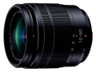

器材库 > APS画幅镜头 > LUMIX G VARIO 12-60/3.5-5.6 ASPH. POWER O.I.S.

详细规格
镜头类型
标准变焦镜头
发布日期
2016-02-24
厂家推荐价格
68,000.00 （日元）
焦距
12mm-60mm
等效35mm画幅焦距
24mm-120mm
最大光圈
f/3.5-5.6
最小光圈
f/22
视角（对角）
84° - 20°
镜头结构
11片/9组
非球面镜片
3片
低/超低色散镜片
1片
光圈叶片
7片
最近对焦距离
20cm
最大放大倍率
0.27倍（35mm等效：0.54倍）
滤镜口径
58mm
镜头卡口
Micro 4/3
防抖
是
颜色
黑色
尺寸
66×71mm
重量
210g
附件
镜头遮光罩，镜头盖，镜头后盖，镜头袋
备注
防尘防滴
匿名网友2018-08-10 11:154.92 分
操作性 5.00耐用性 4.50性价比 5.00解像力 5.00色彩还原 5.00机械结构 5.00
产品图 / 样片
LUMIX G VARIO 12-60/3.5-5.6 ASPH. POWER O.I.S.
评测 / 相关文章
- 详细内容 （存档）
- ［资讯］松下推出12-60mm标准变焦镜头 （存档）
- ［资讯］松下新品发布 鱼与熊掌可以兼得 （存档）
相关文章
- ［资讯］松下推出12-60mm标准变焦镜头 （存档）
- ［资讯］松下新品发布 鱼与熊掌可以兼得 （存档）
- ［资讯］松下新镜头即将发布 （存档）